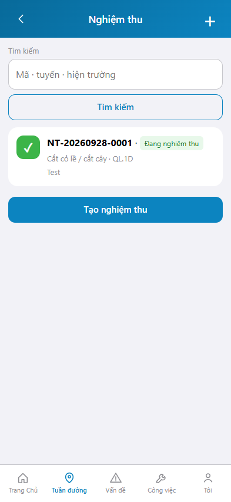
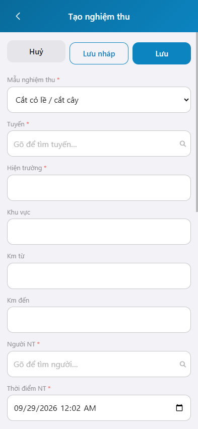

Ảnh khung iPhone 15, 393 x 852. Bản markdown.
Công tác nghiệm thu ghi nhận kết quả nghiệm thu bảo dưỡng thường xuyên. Nghiệm thu không thay tuần kiểm.
Đăng nhập: Hướng dẫn đăng nhập.
graph TD
A[Đăng nhập] --> B[Nghiệm thu]
B --> C[Tạo nghiệm thu]
C --> D[Lưu phiếu]
Mục đích: tìm và mở phiếu nghiệm thu đã lập.

Mục đích: lập phiếu nghiệm thu cho một mẫu công việc trên tuyến.

* = bắt buộc khi Lưu. Ô trống = không bắt buộc.
| Nhãn trên màn | * | Cách điền |
|---|---|---|
| Mẫu nghiệm thu | * | Chọn một mẫu công việc. |
| Tuyến | * | Chọn tuyến trong danh mục. |
| Hiện trường | * | Nhập mô tả hoặc ghim định vị. |
| Người NT | * | Chọn người nghiệm thu. |
| Thời điểm NT | * | Ngày giờ nghiệm thu. |
| Kết quả | Đạt, Không đạt hoặc Khấu trừ. | |
| Hạng mục kiểm tra | Đạt, Không đạt hoặc Không áp dụng. |